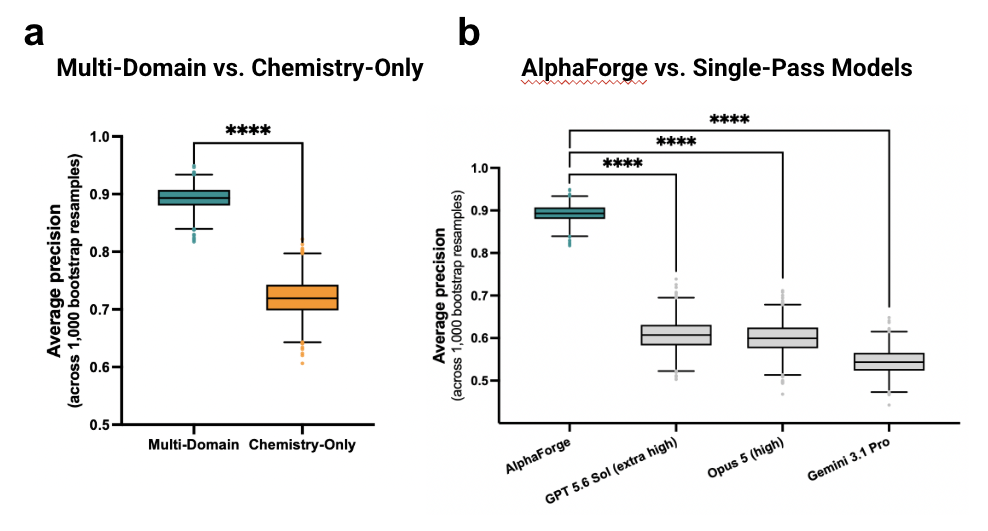
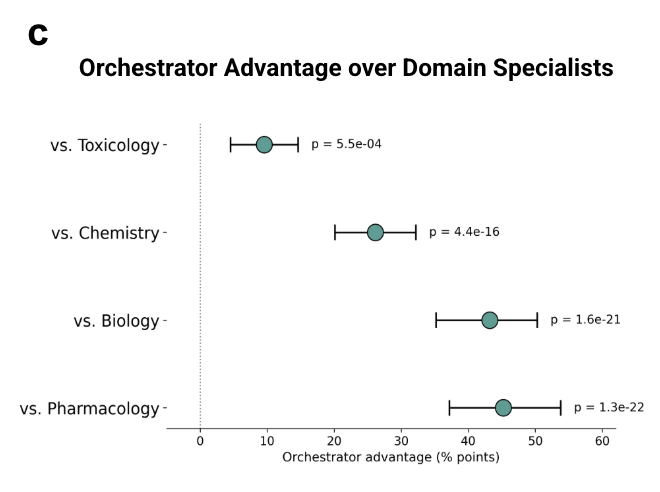

What the Architecture Actually Buys You
Post 7 of 9 on SAISHO’s clinical-outcomes prediction model.
I have been promising this post since post 3, because it answers the only objection to SAISHO that I think is genuinely serious.
The objection: frontier models are extraordinarily capable. You hand one a structure, a target and an indication, and it can reason about drug development at a level that would have been science fiction three years ago. All your orchestration might be an expensive way of arriving where a single well-posed prompt already gets you.
This is not a strawman. It is the first question every technical investor asks and it is the right one. The only acceptable answer is a measurement.
The Comparison

Same cohort, same inputs, same scoring, 1,000 program-level bootstrap resamples for every condition. Boxes are interquartile ranges, whiskers extend to 1.5 times the IQR.
Complete SAISHO workflow: median average precision 0.90.
Chemistry-only SAISHO: approximately 0.72. This is the platform with biology, pharmacology and toxicology removed. Structure-only reasoning.
Single-pass frontier models, same inputs, no scaffolding: GPT-5.6 Sol at extra-high reasoning effort, approximately 0.61. Opus 5 at high reasoning effort, approximately 0.60. Gemini 3.1 Pro, approximately 0.56.
The complete workflow exceeds chemistry-only by about 18 points of average precision, and the strongest single-pass baseline by about 29 points.
Two Things Worth Pulling Out
First, the chemistry agent is not a weak component. At 0.72 it comfortably beats every frontier model answering directly. It is a carefully engineered predictor and it works.
But it has a ceiling, and the ceiling sits 18 points below what four domains reconciled achieve. This is the cleanest evidence in the paper that the gain is architectural. Remove three of four perspectives from a good predictor and you lose a large, reproducible amount of performance. Not because the remaining predictor got worse, but because clinical viability has components that structure cannot see.
Second, and I want to be careful here, because it would be easy to read the frontier-model numbers as a knock on those models. It is not. These are exceptional systems. Every agent in the SAISHO board runs on them. We are not competing with frontier models; we are built on top of them, and if they get better, so do we.
What the result says is narrower and I think more interesting: asking a frontier model "will this drug succeed in the clinic" in one pass is the wrong shape of question.
It collapses four genuinely distinct expert judgments into one undifferentiated forward pass. Is the target biology causal. Is the therapeutic window survivable. Will the PK support a viable dose at the site of action. Is the scaffold developable. In a single pass, a confident answer on one dimension papers over a fatal problem on another, because there is no mechanism forcing the model to hold four incompatible concerns in view simultaneously and reconcile them.
Nobody would run a real drug review board that way. We do not run this one that way either.
Note also that 0.56 to 0.61 is not chance. Against a prevalence baseline of 0.49, the frontier models are genuinely above the floor. They know things. They are just not organized.
The Specialists Are Individually Insufficient

This is the same point measured a different way, on the liability detection from post 6 rather than on discrimination.
Across the same 199 failed programs, the reconciled output detected documented liabilities more often than Toxicology by about 10 percentage points, Chemistry by 26, Biology by 43, and Pharmacology by 45. All four comparisons are paired (same programs, McNemar's exact test, 1,000 paired bootstrap resamples, Holm-corrected across the four), and all four remain significant at Holm-adjusted P < 0.001 with confidence intervals excluding zero.
The ordering is informative rather than arbitrary. The smallest gap is against Toxicology, which makes sense: toxicity is the largest failure category in the cohort and toxicology is excellent at it, so the orchestrator has less to add. The largest gaps are against Biology and Pharmacology, whose expertise is genuinely deep but narrow across the full failure landscape.
And the containment result is the one I find most convincing: every program Chemistry detected was also detected by the orchestrator, which then found documented liabilities in a substantial number of additional programs. The reconciliation is not trading one blind spot for another. It is strictly additive over that specialist.
Reasoning as Architecture
Schmidt and Mahesh argued in MIT Technology Review that agents that reason represent a foundational change rather than a better tool, and that most scientific fields will never get their Protein Data Bank. I quoted that in a post earlier this year and I keep coming back to it, because these numbers are what that argument looks like when you put a number on it.
Nothing about the underlying model changed between 0.56 and 0.90. Same frontier systems, same inputs, same cohort, same scoring. What changed is that we decomposed the question into the judgments it actually consists of, ran them independently so they could not anchor on each other, and forced a reconciliation that had to resolve the contradictions.
The unit of progress stops being the model and starts being the reasoning process built around it.
What This Does Not Show
This is the limitation I would put in bold in the paper, and it is in there.
The complete workflow differs from the baselines in multiple respects at once: domain-specific decomposition, expert grounding, tool access (co-folding, QSAR, ADME-Tox), substantially more inference-time computation, and the reconciliation step. The comparison supports the assembled workflow as a package. It does not isolate the contribution of any single component.
It is entirely possible that a large share of the 29 points comes from inference-time compute rather than from the decomposition specifically. I do not think that is the whole story, because the chemistry-only condition also gets tool access and substantial compute and still lands at 0.72. But "I do not think so" is not a measurement. Targeted ablations that vary one component at a time are needed to quantify the individual contributions, and we have not run them.
Anyone who tells you their multi-agent system's gains come from the agents specifically, without having held compute fixed, is telling you what they believe rather than what they measured.
Next week: what happens when you keep the molecule and change everything around it.
More on the platform at saisho.ai.